vtree_vs_vtree2.Rmd
library(vtree2)
#>
#> Attaching package: 'vtree2'
#> The following object is masked from 'package:graphics':
#>
#> layoutThe original vtree package implements most of its functionality in a
single function vtree() with more than a hundred options
and producing a plot. The function implements its own mini-language for
specifying formats of labels, variables, conditions to select nodes and
so on. This allows for simple and terse function calls.
However, this limits the flexibility of the package. It is not
possible to fully customize the labels, inspect the interim data, use
the various summaries for other purposes (e.g. to produce simple
tables). vtree2 separates data preparation, label
construction, node selection and plotting into four separate steps. This
comes at the cost of more verbose function calls.
vtree2 is meant to be natural for tidyverse users. You split the operations by their domain - i.e, you don’t mix calculations, topology manipulation and plotting, but build the plot in stages: first prepare the data, then pass it on to prune / find / select nodes, then you add labels and colors and finally you plot it.
However, to make it more concise, if you do not add labels / colors yourself, the plot function will do it for you. Alternatively, you can manipulate them in stages. The following two plots are based on the same data set - titanicNA, which is the same as the Titanic data set, but with some values in the columns Class, Age and Sex replaced by NAs.
library(vtree2)
# minimal code
vtree(titanicNA) |> plot()
#> Warning: There was 1 warning in `mutate()`.
#> ℹ In argument: `nleafs = map_bfs_back_int(...)`.
#> Caused by warning:
#> ! The `father` argument of `bfs()` is deprecated as of igraph 2.2.0.
#> ℹ Please use the `parent` argument instead.
#> ℹ The deprecated feature was likely used in the tidygraph package.
#> Please report the issue at <https://github.com/thomasp85/tidygraph/issues>.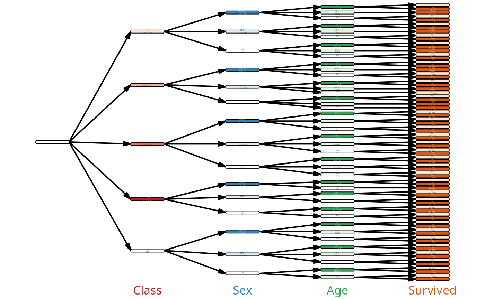
vt <- vtree(titanicNA)
# extra statistics
stats <- summary_vt(titanicNA, vt, Age)
# prune returns a pruned vtree which we
# then pass down the pipeline
prune(vt, freq < .2) |>
add_labels() |>
# leaf is a column in the node data frame
# TRUE for a leaf node
mutate(label = ifelse(leaf,
paste0(label, "\n",
stats),
label)) |>
plot(lwidth = .7)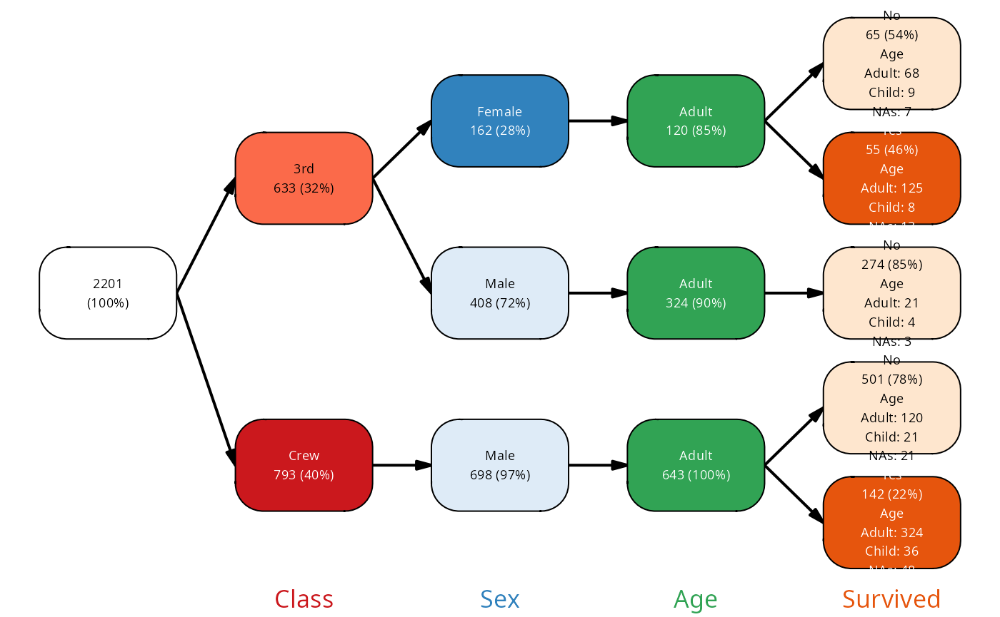
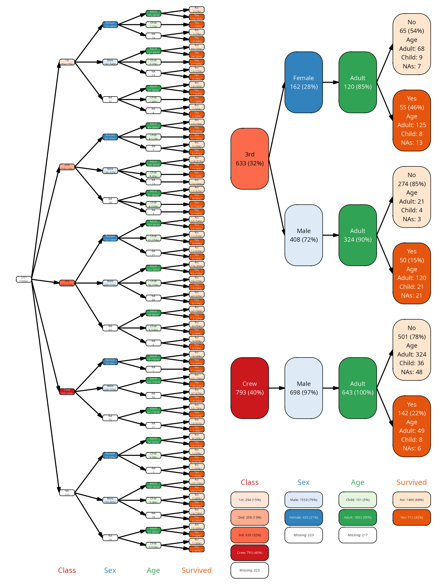
Several options of the original vtree are actually for pre-processing of the data. For example, the variable specification ‘variable>value’ in the vtree mini-language is used to split a numeric variable into two levels.
I think that explicing splitting of the data before constructing the
vtree is more fittin. It is easy, and for complex cases there are many
specialized tools and packages dealing with that. For most cases, a
simple cut() or ifelse() is enough.
iris |>
mutate(Sepal.Length = ifelse(Sepal.Length > 5.5, "long", "short")) |>
mutate(Sepal.Width = cut(Sepal.Width, breaks = c(2, 3, 4, 5))) |>
vtree(Sepal.Length, Sepal.Width, Species) |>
plot()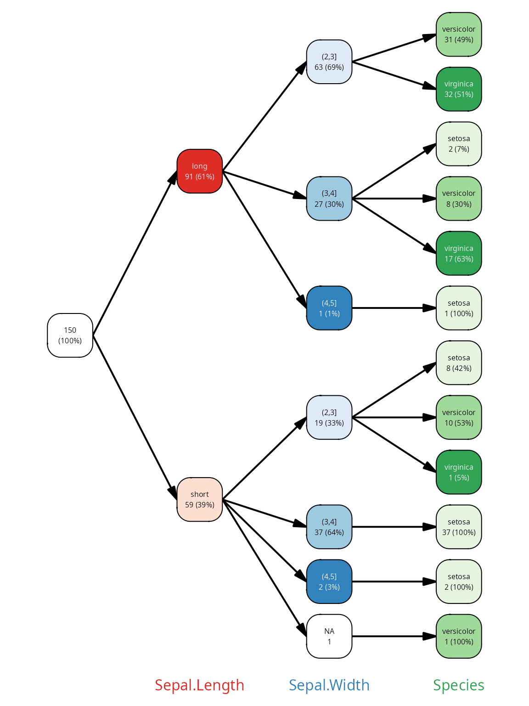
Pruning. In vtree2, you can prune the tree with the
prune() function. It takes a logical vector of length equal
to the number of nodes in the vtree object. You can use the variables in
from the vtree node data frame to construct the logical vector. For
example, to prune all nodes with frequency less than 0.15 or number of
cases less than 150, you can do
prune(vt, n < 150 | freq < .15). The result is always
a vtree which you can then plot.
The expression you pass to the prune() function, like
n < 150 | freq < .15, is evaluated in the context of
the vtree node data frame with added virtual columns for each of the
variables in the vtree. Each row of the context data frame corresponds
to a node in the vtree, so you can select all nodes which fullfill a
certain condition.
However, that also sometimes causes problems: if you specify that you
want to prune all nodes where “Sex” is NA, you will have a problem. The
virtual column “Sex” has a value for each node, also for nodes that
correspond to “Class” or “Survived” - and that value is NA. Therefore,
you have to use a more complex expression which involves checking
whether a node corresponds to the variable “Sex”:
node_col == "Sex" & is.na(Sex). That works.
I am still thinking how to solve it in a better way.
data(FakeData, package="vtree")
library(cowplot)
# vtree::vtree(FakeData, "Severity Sex")
p1 <- vtree(FakeData, Severity, Sex) |> plot()
#vtree::vtree(FakeData,"Severity Sex",
# prune=list(Severity=c("Mild","Moderate")))
p2 <- vtree(FakeData, Severity, Sex) |>
prune(Severity %in% c("Mild", "Moderate")) |>
plot()
plot_grid(p1, p2)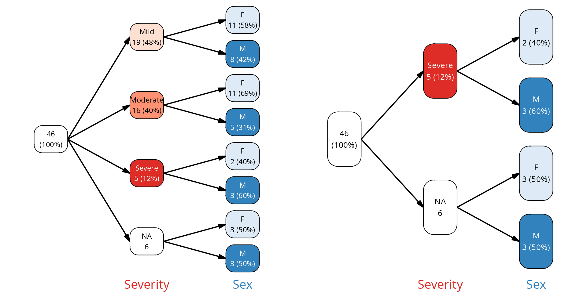
prunebelow
#vtree::vtree(FakeData, "Severity Sex",
# prunebelow=list(Severity=c("Mild","Moderate")))
vtree(FakeData, Severity, Sex) |>
prune(Severity %in% c("Mild", "Moderate"),
follow_only=TRUE) |>
plot()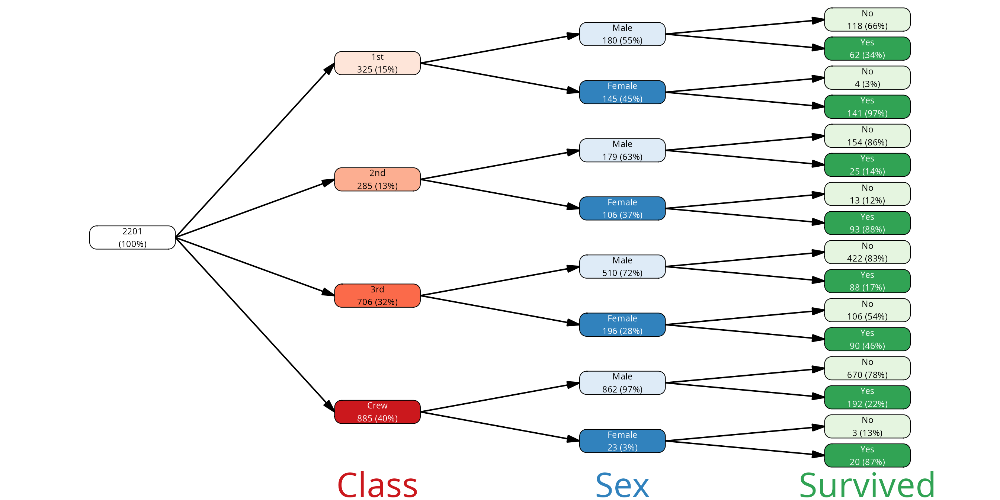
follow
The way that prune() in vtree2 works, this requires a bit of
thinking. We want to prune all branches below the severity levels
except for the Mild and Moderate nodes. One could think that
this is the way to do it:
!Severity %in% c("Mild", "Moderate"). Unfortunately,
prune() matches the condition against a vector which contains the
“Severity” values for other nodes - this doesn’t make sense, so the
value is NA. Which is not Mild or Moderate, and thus the condition
prunes absolutely all nodes and we get an error.
What one needs to do is to specify that we are looking only at nodes at the Severity variable:
#vtree::vtree(FakeData, "Severity Sex",
# follow=list(Severity=c("Mild","Moderate")))
vtree(FakeData, Severity, Sex) |>
prune(node_col == "Severity" & !Severity %in% c("Mild", "Moderate"),
follow_only = TRUE) |>
plot()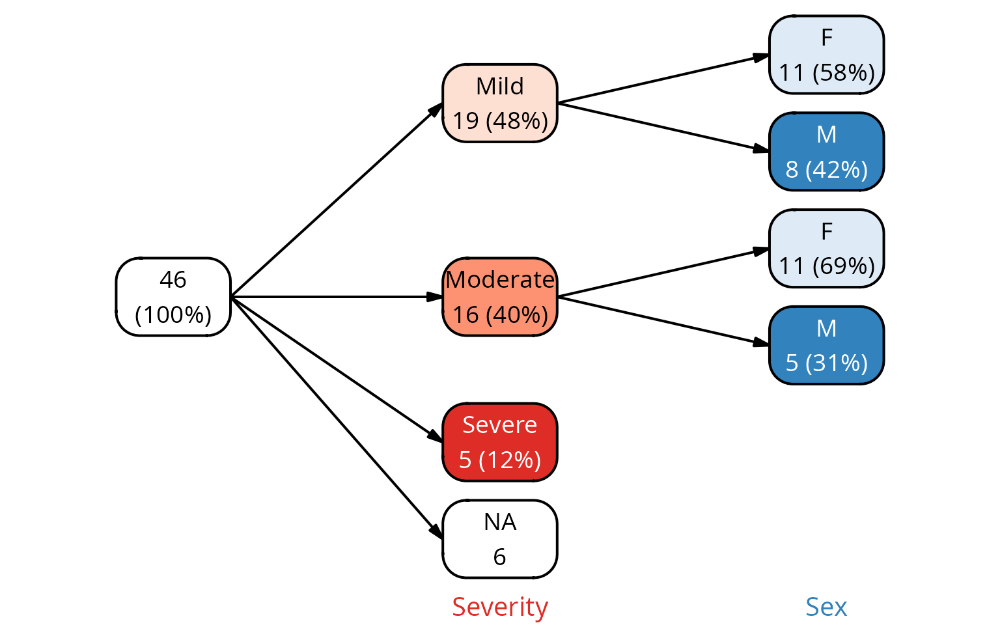
Targetted pruning. Since vtree2 accepts any expression creating a logical vector for pruning, specifying a targetted pruning is easy. Also, each node is associated with a path which is constructed from the path to the node, so this works:
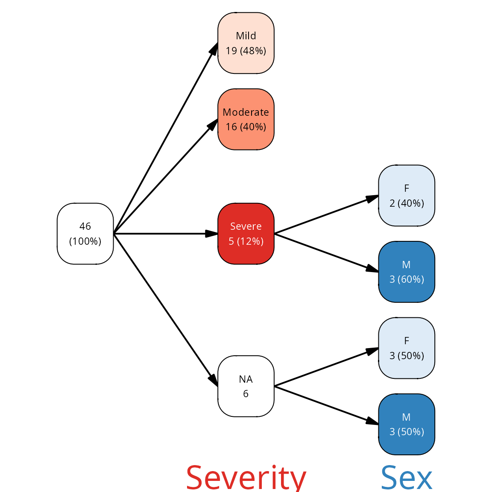
Keeping. The keep parameter in vtree is a bit peculiar, because it silently keeps also the nodes which are NA if the valid percentages are used. Also, both the children and the parents of the selected nodes are kept.
#vtree::vtree(FakeData, "Severity Sex",
# keep=list(Severity=c("Moderate")))
p1 <- vtree(FakeData, Severity, Sex) |>
keep(Severity == "Moderate") |>
plot()
p2 <- vtree(FakeData, Severity, Sex) |>
keep(Severity == "Moderate", keep_follow = FALSE) |>
plot()
plot_grid(p1, p2)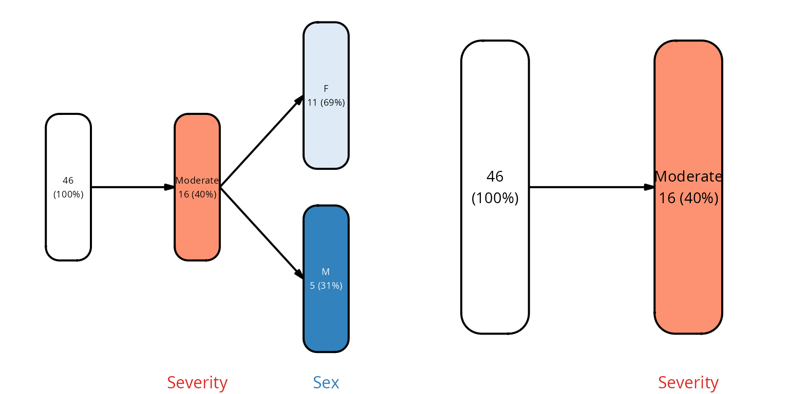
prunesmaller This is for selecting
nodes based on the number of observations. In vtree2, you can use any
column from the node data frame - including n, the number
of observations in the node, freq, the calculated
proportion, denominator etc etc.
#vtree::vtree(FakeData, "Severity Sex Age Category", prunesmaller = 3)
# XXX: again, vtree keeps NA nodes even if they are smaller than 3
p1 <- FakeData |> mutate(Age = as.character(Age)) |>
vtree(Severity, Sex, Age, Category) |>
plot()
p2 <- FakeData |> mutate(Age = as.character(Age)) |>
vtree(Severity, Sex, Age, Category) |>
prune(n < 3, na.rm = FALSE) |>
plot()
plot_grid(p1, p2)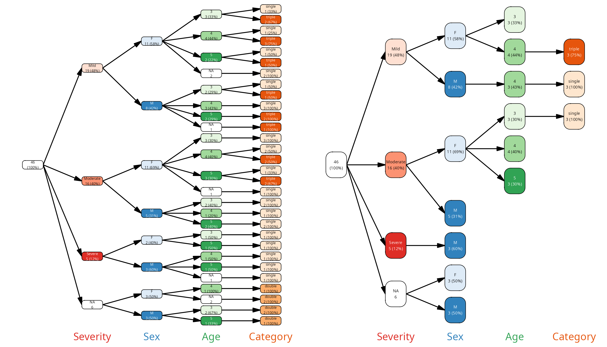
In vtree2, there are some functions that construct automatic labels, but for any more complex case you can use standard R functions to construct your own labels.
By default, add_labels() construct the labels implicitly
when you call plot() on a vtree object. However, you can add the labels
yourself either with add_labels() (which is quite flexible)
or by directly modifying the label column in the vtree.
plot.vtree() will not overwrite labels if they already
exist.
For example, to mimick the sameline option in vtree, you
can first generate the standard automatic labels and then replace the
newline character with a space:
## vtree::vtree(FakeData, "Severity Sex", sameline = TRUE)
vtree(FakeData, Severity, Sex) |>
add_labels() |>
mutate(label = gsub("\n", " ", label)) |>
plot(lwidth = .9)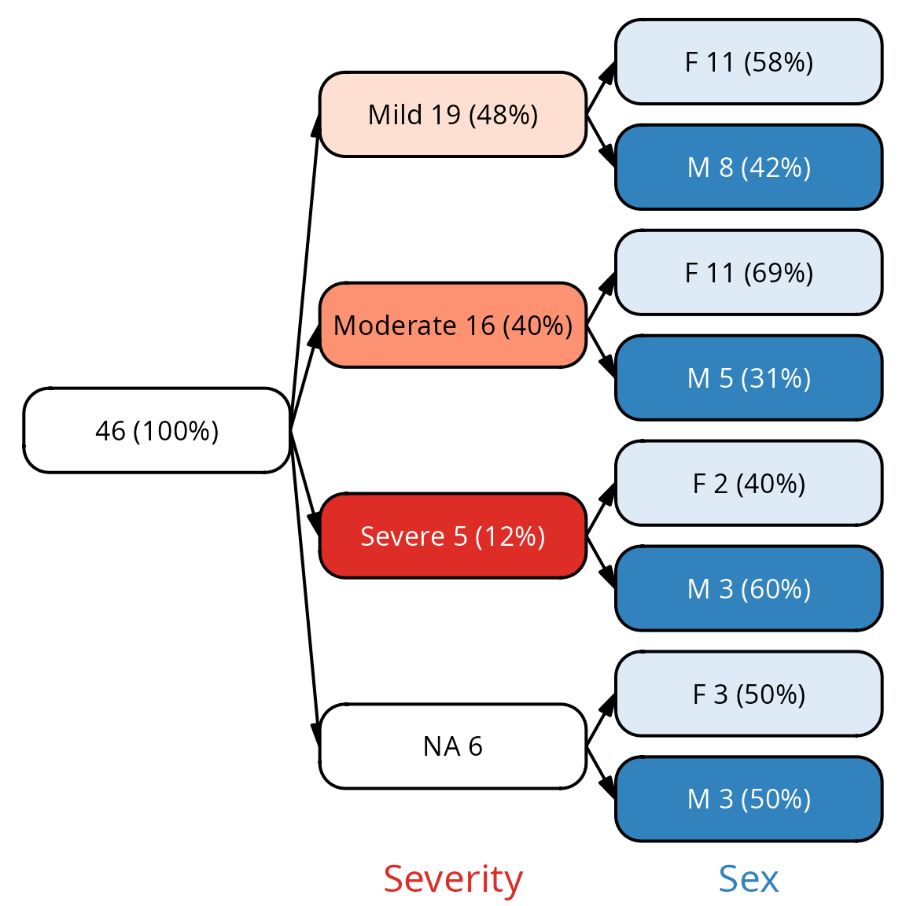
Arguably, that is way more code than just adding
sameline = TRUE to the vtree() call, but it is also way
more flexible.
labelnode. This is used in vtree to
replace a variable level with a custom label. In vtree2, you can simply
replace the variable levels in the data before constructing the
vtree.
## vtree::vtree(FakeData,"Group Sex",horiz=FALSE,
## labelnode=list(Sex=c(Male="M",Female="F")))
FakeData |>
mutate(Sex = dplyr::recode(Sex, M = "Male", F = "Female")) |>
vtree(Group, Sex) |>
plot(dir = "tb")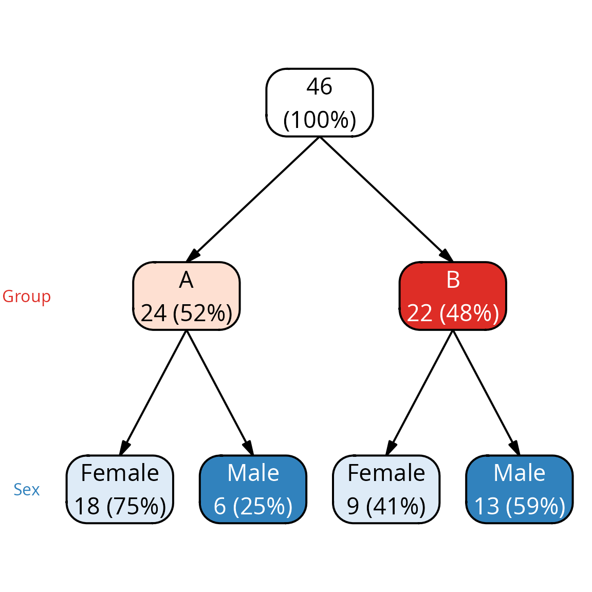
How about changing M to Male and F to Female but only for the nodes in group A? In vtree2, you need to manipulate the node labels. You can construct the nodes from scratch, or use substitution to clean up nodes. One of several ways of doing that is this: you find the nodes that are below the node “Group:A”, and then substitute M with Male and F with Female for these nodes only:
vtree(FakeData, Group, Sex) |>
add_labels() |>
prune(path == "Group:A", mark_only=TRUE) |>
mutate(label = ifelse(mark == "prune",
gsub("^F", "Female", label),
label)) |>
mutate(label = ifelse(mark == "prune",
gsub("^M", "Male", label),
label)) |>
plot()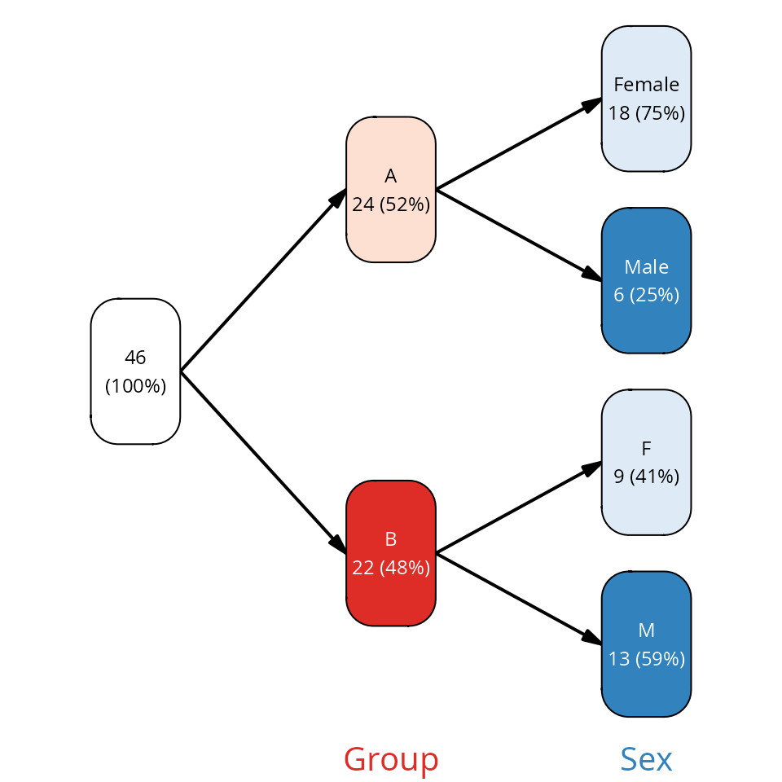
This is of course much more code, but is not only more flexible, but also less exotic.
Prune / keep and labelling operation might want to target certain
nodes by their path. This is achieved in vtree using
tlabelnode. In vtree2, each node has an path,
a character representation of a path, and a path_l column
with the full path specified as list. You can use these to target nodes
for pruning, keeping, labelling or coloring. More: you can use your
prunning or keeping operation not to actually remove the nodes, but to
just select them for further operations. Thus, you can find a node path,
use prune to find all nodes that would be removed, and then
color them in red.
data(titanicNA)
vt <- vtree(titanicNA, Class, Sex, Survived)
vt |> keep(path == "Class:1st/Sex:NA/Survived:Yes" |
path == "Class:2nd/Sex:NA/Survived:Yes") |>
plot()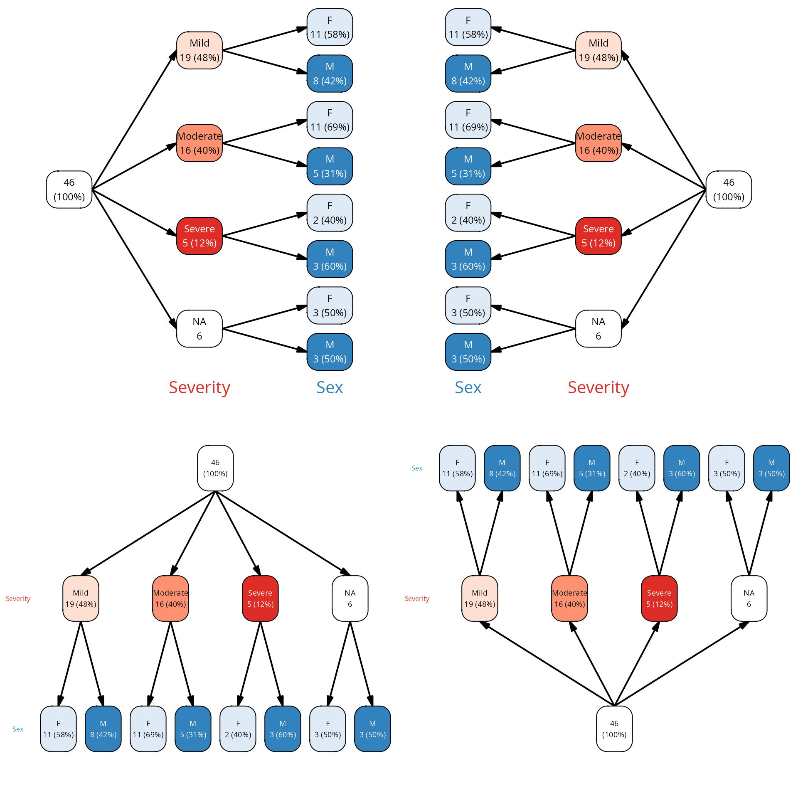
p1 <- vt |> add_labels() |>
mutate(label = ifelse(path == "Class:1st", "First class", label)) |>
mutate(fill = ifelse(path == "Class:1st", "red", "white")) |>
plot()
# mark the nodes to prune in red
p2 <- vt |> prune(path == "Class:2nd/Sex:NA", mark_only=TRUE) |>
mutate(fill = ifelse(!mark, "white", "red")) |>
plot()
plot_grid(p1, p2)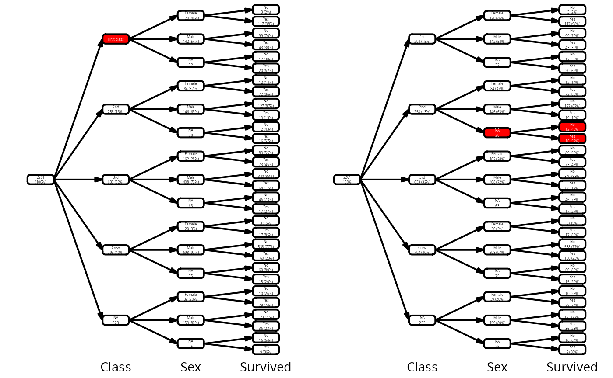
The horiz=TRUE option in vtree directs
whether the tree is plotted horizontally or vertically. In vtree2, you
can specify the direction of the plot with the dir
parameter in plot(). The default is “lr” (left to right),
but you can also use “tb”, “bt”, or “rl”.
vt <- vtree(FakeData, Severity, Sex)
p1 <- plot(vt)
p2 <- plot(vt, dir="rl")
p3 <- plot(vt, dir="tb")
p4 <- plot(vt, dir="bt")
plot_grid(p1, p2, p3, p4, ncol=2)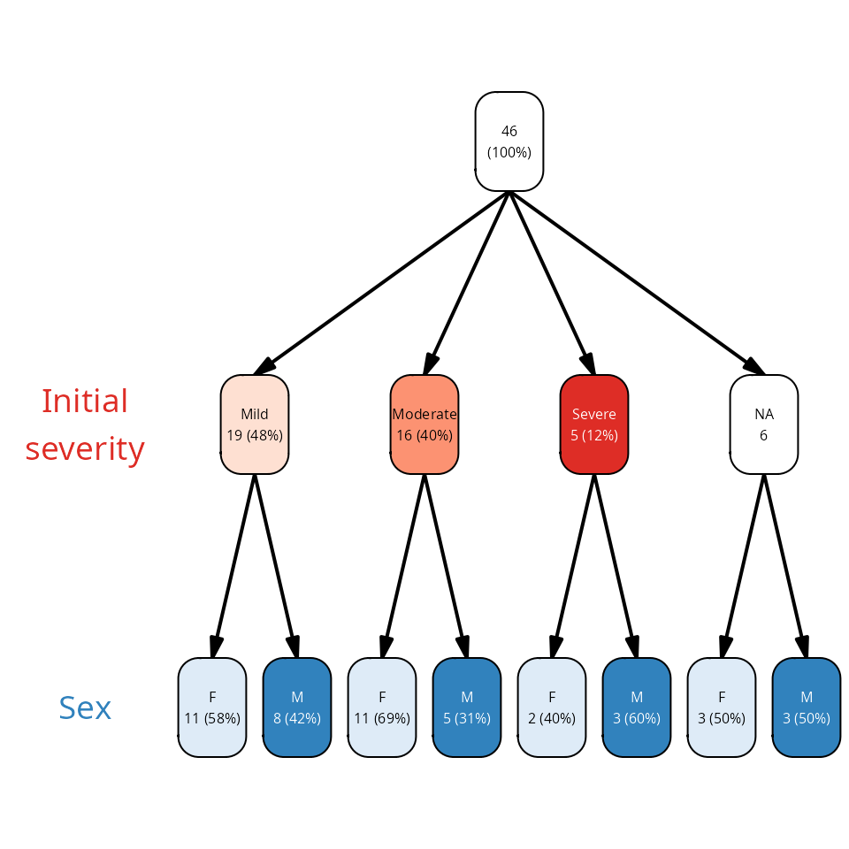
Changing variable labels. In vtree, you can specify
alternative variable labels with the labelvar parameter. In
vtree2 you can use the column labels you wish to see in the original
data. If you have weird characters, use the backticks.
## vtree::vtree(FakeData, "Severity Sex",
## horiz = FALSE,
## labelvar=c(Severity="Initial severity"))
FakeData |>
dplyr::rename(`Initial\nseverity` = Severity) |>
vtree(`Initial\nseverity`, Sex) |>
plot(dir = "tb")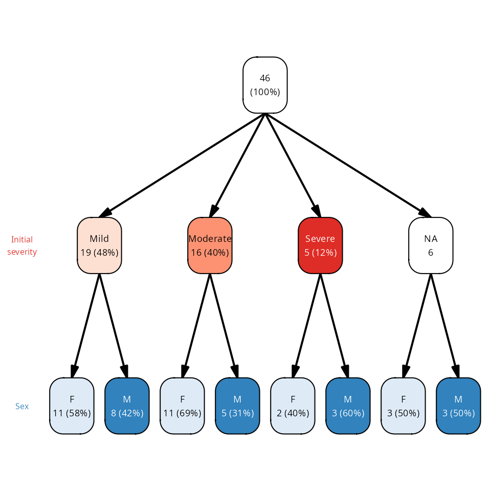
The following are not yet implemented in vtree2:
vtree() and
then plot it with plot(). This means one more function
call, but a much more flexible plotting system.label column in the vtree object.color column in the
vtree object.